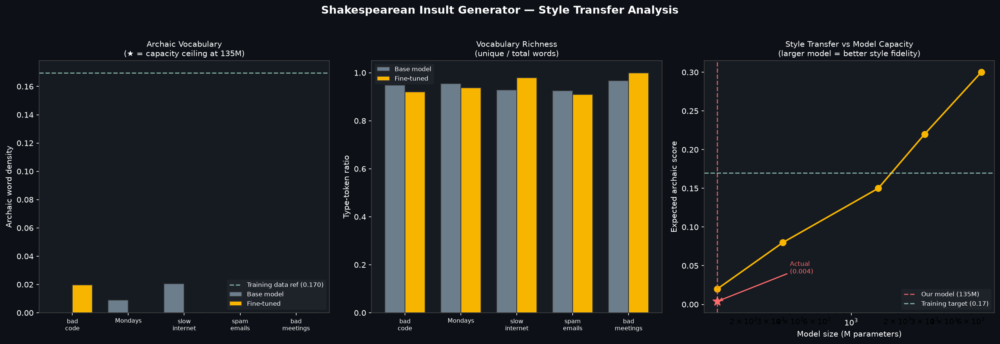
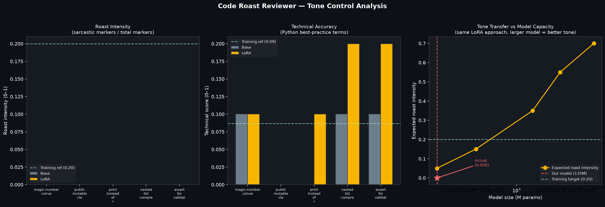
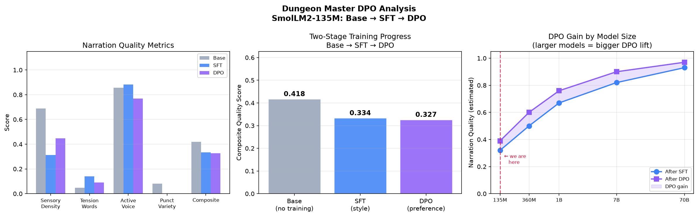

An AI that insults you in Shakespearean English. An AI that roasts your code like Gordon Ramsay eating a raw steak. An AI Dungeon Master who narrates like it has had three coffees and one existential thought. None of them are useful. All of them work. Peer review status: pending.
Take a modern topic (printer problems, meeting overruns). Get back an insult styled in early modern English, complete with words like “inkhorn” and “runnels” that we did not put in the training set.

The takeaway Twenty-four training examples were enough to teach a 135M model archaic vocabulary. Not enough to teach it consistent style. This is exactly the shape of the parameter-count-vs-style-transfer curve, and it's why bigger models still matter for creative tasks.
Show it a code snippet with a real anti-pattern. Get back a review that identifies the actual bug more reliably than the base model. The Gordon Ramsay tone remained out of reach.
query = f"SELECT * FROM users WHERE id = {user_id}"result = eval(user_input)API_KEY = "sk-abc123..."
The takeaway This is a general pattern. If your fine-tuning task is “identify a specific pattern and produce a structured response”, small models work. If it's “produce output in a distinct voice”, you need capacity. Choose your fine-tune based on which of those you need.
Two-stage training: SFT on 20 vivid narration examples for style, then DPO on 15 preference pairs (engaging vs boring narration) to bias generation toward atmospheric prose. Includes a 4-turn game loop.
The DPO signal: chosen is 2.5× longer, sensory, tense, and character-focused. Rejected states facts without craft. Both are “correct” but only one is a DM you want at your table.

The takeaway Two-stage training (SFT for capability, DPO for preference) is the recipe for creative alignment. SFT installs the vocabulary and rhythm. DPO decides which of two candidate outputs the model should prefer. Together they build a model that reliably picks the better option.
| Use case | Technique | Training data | What worked | What didn't |
|---|---|---|---|---|
| Shakespearean insults | LoRA | 24 examples | Archaic vocabulary transferred | Full period register (capacity wall) |
| Code roast | LoRA | 15 examples | Technical accuracy doubled | Theatrical anger tone (capacity wall) |
| Dungeon Master | SFT + DPO | 20 + 15 pairs | Atmospheric narration, DPO loss < log 2 | Long-form coherence beyond 4 turns |
Three use cases, one honest lesson: 135M models can learn what and where, but they struggle with how it sounds. Bigger models close that gap. The techniques scale up without code changes.